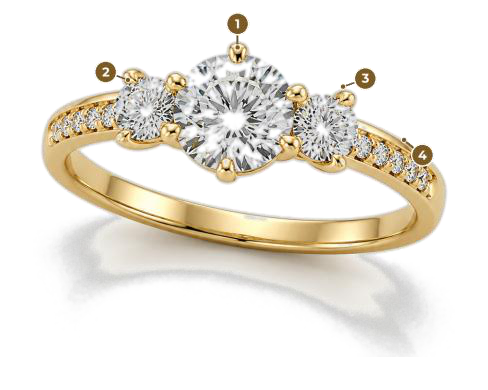
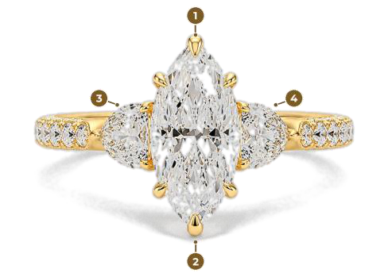
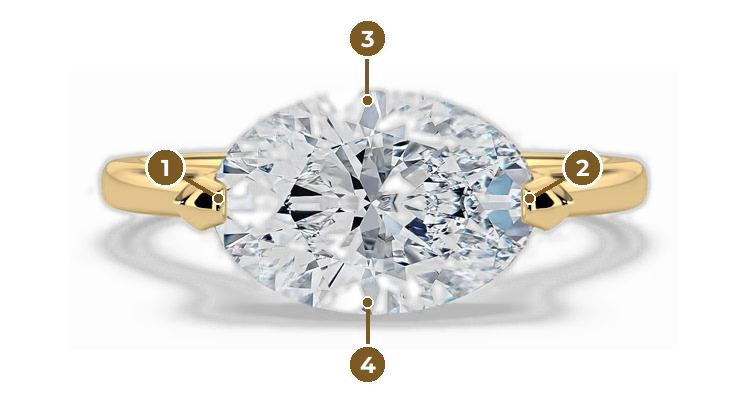

Simple habits make a lasting difference. Our care guide brings together gentle cleaning, careful storage and the signs that your piece needs professional attention.
Choose care appropriate to the metal, gemstones and finish of your individual piece.
The golden rules of jewellery care
Last on, first off. Apply moisturiser, perfume and hairspray before putting jewellery on; remove it before activities that expose it to chemicals or knocks.
One piece, one space. Keep each item in its own soft pouch or lined compartment so stones and metals cannot scratch one another.
Keep cleaning gentle. Lukewarm water and mild washing-up liquid suit many sound gold-and-diamond pieces. Check first for delicate gemstones, treatments, plating or special finishes.
If in doubt, take it off. Chlorine, cleaning products, grit and hard knocks can damage metal or settings.
Arrange a professional check at least annually. Regularly worn, raised or multi-stone settings may need closer inspection every six months.
Yellow gold: cleaning, storage & maintenance
How to clean
For suitable pieces with secure settings, soak in lukewarm water and a few drops of mild washing-up liquid for 10–15 minutes. Loosen residue with a soft-bristled brush. Rinse thoroughly in a bowl, then pat dry with a lint-free cloth. Use only a polishing cloth suitable for the finish.
Products to avoid
Avoid chlorine, bleach, ammonia-based cleaners and abrasive scourers. Do not use a home ultrasonic or steam cleaner until a jeweller has checked the stones, settings and finish.
When to remove it
Remove gold jewellery before swimming, gardening, household cleaning, washing up and exercise. Apply lotions, perfume and hairspray first; their residue can dull the finish.
Storage
Store separately in a soft pouch or lined compartment. Gold is relatively soft: rubbing against other pieces is a common source of scratches. Keep chains untangled and clasps secured.
Scratches & polishing
Light surface marks are part of wear. Ask a jeweller about deeper scratches, dents and professional polishing; repeated or forceful home polishing can remove metal or damage a finish.
Professional care
An annual clean is also an opportunity to inspect clasps, prongs, joints and wear. Ask which cleaning method is appropriate for your individual piece.
Sterling 925 silver: gentle care, lasting shine
Gentle cleaning
Use lukewarm water with a little mild washing-up liquid and a soft cloth or soft brush. Rinse thoroughly and dry completely. Ask first if the piece has delicate stones, plating or a special finish.
Understanding tarnish
Silver naturally darkens through exposure to air, moisture and everyday substances. Tarnish alone does not mean the silver is faulty; suitable gentle care can restore its shine.
Polishing & products
For plain, uncoated silver, use a silver polishing cloth with light pressure. Avoid toothpaste, abrasive scrubs and harsh dips. Get advice before polishing plated or stone-set pieces.
Chemicals & chlorine
Remove silver before swimming, hot tubs, cleaning and exercise. Keep away from bleach and strong chemicals. Put jewellery on after perfume, lotion and hairspray.
Dry, separate storage
Store fully dry in a separate soft, anti-tarnish pouch or lined compartment. Avoid humid bathrooms and direct heat. Separating pieces also prevents scratches and tangles.
When to seek help
Stubborn tarnish, damaged clasps and loose stones need professional attention. Have regularly worn silver inspected at least once a year.
Diamonds: clean the stone, protect the setting
A careful home clean
For suitable untreated diamonds in secure settings, a 15–20 minute soak in lukewarm water with mild washing-up liquid helps loosen soap, lotion and skin oils. Do not soak pieces containing materials or treatments that require different care.
Underneath matters
Use a soft-bristled brush gently around and underneath accessible settings, without forcing it between claws or tiny pavé stones. Rinse in a bowl and dry with a lint-free cloth.
Hardness is not invulnerability
Diamonds resist scratching but can chip from a sharp impact. Chlorine and harsh household products can also damage the metal holding them. Remove rings for sport, cleaning, gardening and swimming.
Settings & inspection
Every few weeks, look for worn, flattened or catching prongs and any movement in a stone. Use no tools and do not try to tighten a claw. Stop wearing a loose piece and arrange inspection. Professional checks every six to twelve months help catch wear early.
Three-stone & pavé rings: where to clean and check
Inspect each stone independently. One side can loosen before the centre stone does; the shared gallery and the points where the settings meet also deserve attention.
Three-Stone Round Classic

Check the centre-stone prongs, then the left and right side-stone prongs separately. Gently brush a pavé band; avoid abrasive cloths over its tiny stones. Ask for checks around six-month intervals if the ring is worn regularly.
Marquise & pear three-stone designs

Protect the top and bottom points of elongated stones from knocks and snagging. Check each pear side stone separately. Never press or squeeze the tip protectors or claws yourself.
East-west solitaires: exposed edges & the gallery

A sideways oval or elongated stone presents its edges differently during everyday wear. Inspect all claws and protect exposed edges from bags, steering wheels, worktops and manual tasks. The exact number and position of claws depends on your design.
Lotion and oil collect in the underside gallery. Clean accessible areas gently with a soft brush. Remove the ring for sport and manual work, and discuss a roughly six-month inspection schedule for frequently worn or exposed settings.
When should I take my jewellery off?
Swimming & hot tubs
Chlorine can damage gold alloys and discolour silver. Remove jewellery before entering pools and hot tubs.
Showering & bathing
Soap, shampoo, bath oils and salts leave residue around settings and may affect finishes. Remove jewellery first.
Gym, gardening & manual work
Equipment can scratch or bend metal. Soil and grit can collect beneath settings; gloves can catch raised rings. Remove jewellery before these activities.
Cleaning & chemicals
Remove jewellery before household cleaning, hair dye, paint thinner and other chemical work. Keep it away from bleach and ammonia.
Creams, perfume & sunscreen
Apply products first and let them settle before putting jewellery on. Residue can dull stones and collect around claws.
Sleeping
Fine chains and raised settings can snag or bend overnight. Removing delicate pieces before bed reduces that risk.
Warning signs & caring for jewellery when travelling
Arrange an inspection sooner
Stop wearing a piece if a stone moves, rattles or sits crooked, or a prong looks flattened or catches fabric. A ring that suddenly spins more, a damaged clasp, stubborn silver tarnish, or more than a year since its last check also deserves attention. Do not attempt a home repair.
Pack and wear thoughtfully
Use a compartmented travel case and separate soft pouches, not loose jewellery in a wash bag. Keep valuable pieces with you rather than in checked luggage, and retain photographs or descriptions. Remove jewellery for pools, spa treatments and activities involving sunscreen or chemicals; secure it carefully whenever you need to take it off.
For other gemstones, treated stones, plated surfaces and special finishes, ask for advice specific to the piece. Contact our London atelier to arrange a check and confirm the appropriate service.